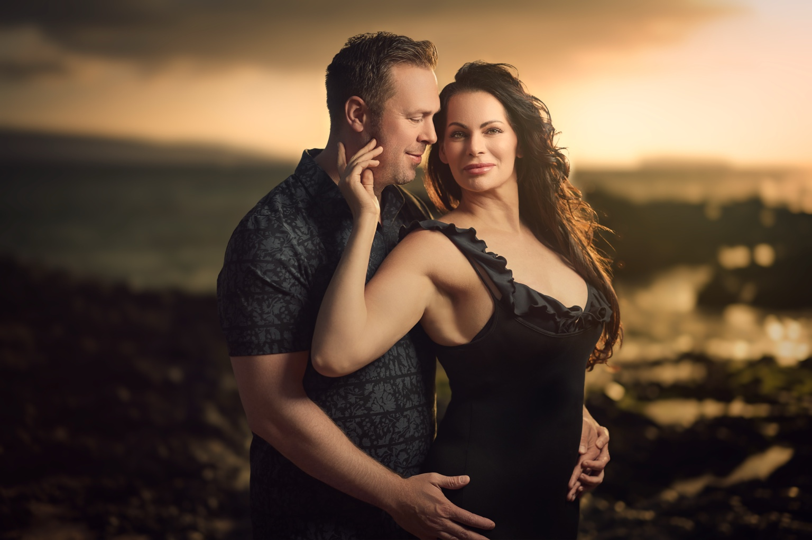
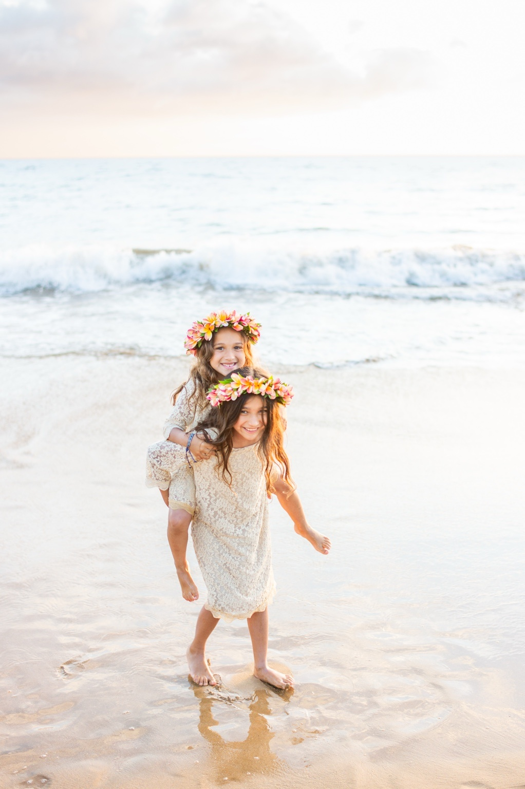
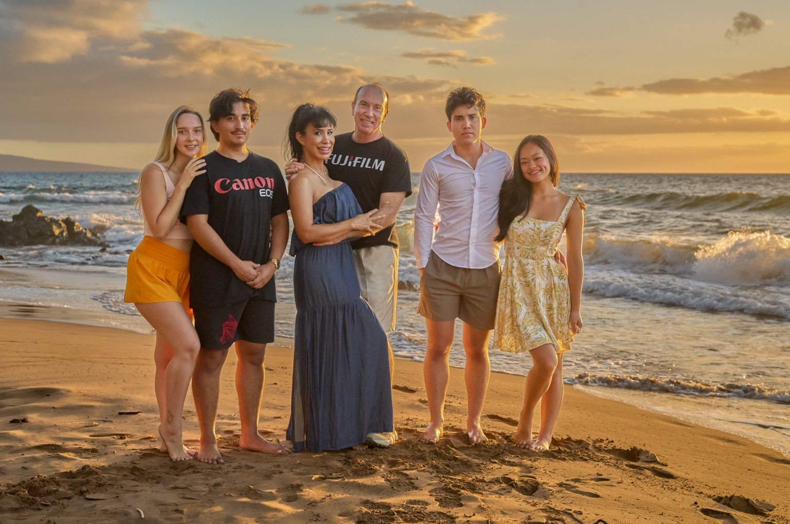

Maui's most trusted photography experience.
PORTRAITS CREATED WITH INTENTION, BEAUTIFUL LIGHT AND MORE THAN TWENTY-FIVE YEARS OF LOCAL EXPERIENCE
Thousands of stories told. With one enduring promise.
Photography that feels alive.
Movement. Atmosphere. Emotion. Images that feel less like portraits and more like scenes from your own story. No AI, all images hand edited.
Some photographs document a moment.
Others become a part of the family archive.
We create portraits in extraordinary Maui light, with direction that feels natural and an experience that never feels rushed.
The result is more than a gallery of vacation photos. It's a visual record of who you were — together — in Maui.



We guide the moment to its natural conclusion.
The laughter, the dance, the movement, the glance back — the unplanned.
Timeless, for generations to enjoy.
Because life happens fast.
Moments to remember.


What brings you to Maui?
Explore an experience shaped around the people and the moment you want to remember.

Aloha, we're the Balters.
More than a quarter century ago, our family made Maui our home.
Since then, we've had the privilege of helping thousands of visitors preserve one of the happiest weeks of their lives.
What began as one photographer has grown into a family of artists. Today, our sons photograph alongside us.
When you book Wailea Photo, you're not hiring strangers. You're welcomed by a local Maui family that has spent decades learning this island — its changing light, beautiful beaches and the quiet moments that become your favorite photographs.
— The Balter Family
The stars can become part of your story.
Available exclusively to returning clients. Few places on Earth offer the night sky like Maui. Our exclusive Milky Way sessions create portraits unlike anything you've imagined.